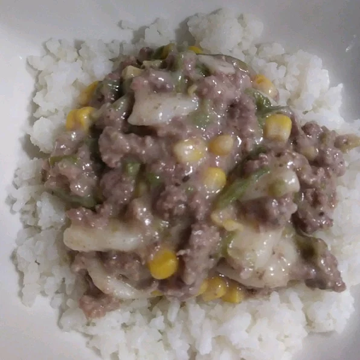

This is an awesome dinner on a cold winter night. It is inexpensive and a great way
for the kids to take in some vegetables without any fuss. It's great served with warm
bread and butter.
Ingredients:
- 2 pounds ground beef
- 3 (15 ounce) cans sliced potatoes, drained
- 2 (10.5 ounce) cans cream of mushroom soup
- 1 (10 ounce) can whole kernel corn, drained
- 1 (10 ounce) can peas, drained
- salt and pepper to taste
steps:
- Brown beef in a large skillet over medium heat. Drain fat, and return skillet
to stove. Stir in potatoes, cream of mushroom soup, corn, and peas.
Sprinkle with salt and pepper. Cover, and simmer over low heat for 10 to 15
minutes.
- enjoy the meal
return to top page
return to main page